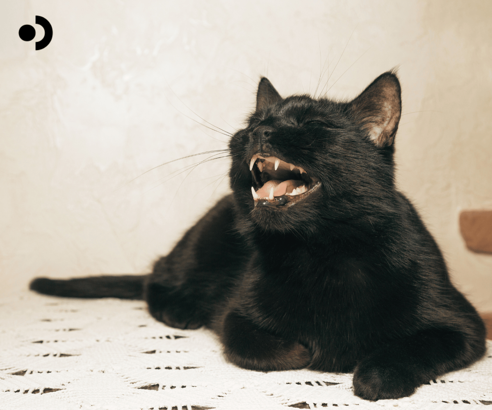

For millions of people worldwide, sharing a home with a cat sometimes means battling annoying cat allergies. The primary culprit is a tiny but potent protein known as Fel d 1. Despite its small size, Fel d 1 is responsible for the majority of allergic responses to cats, and its role is significant and complex. Besides Fel d 1, the cat allergen family includes other allergens such as Fel d 2, Fel d 3, and Fel d 4, though to a lesser extent. This blog will discuss the origins of the Fel d family, the mechanism of cat allergens triggering allergic responses, and what can be done to alleviate the symptoms. Let’s dive in!
What is Fel d 1?
Fel d 1 is a glycoprotein predominantly produced in the sebaceous glands of cats. It is also secreted through saliva, skin, and the lacrimal, salivary, and anal glands. When a cat grooms itself, Fel d 1 from the saliva is transferred to their fur. Fel d 1 sticks to its fur as microscopic particles and becomes airborne. Because of its small aerodynamic size (approximately 7 nm in diameter), Fel d 1 can remain suspended in the air for long periods and adhere to surfaces such as furniture, clothing, and walls.

Fel d 1 is remarkably sticky and resilient, explaining why cat allergens are often found even in places where no cats live, such as schools, offices, and public transportation.
Microscopically, Fel d 1 is a tetrameric glycoprotein composed of two heterodimers, each formed by two polypeptide chains linked by three disulfide bonds. Each heterodimer consists of Chain 1 (~70 amino acids) and Chain 2 (~90 amino acids), with a high degree of structural homology to secretoglobins, a family of small, secreted proteins involved in immune modulation and tissue homeostasis, but its primary function is unknown.
Crystallographic studies have shown that Fel d 1 forms a compact, globular structure stabilized by hydrophobic interactions and disulfide bridges. This stability likely contributes to its persistence in the environment and resistance to degradation.
Why Does Fel d 1 Cause Allergies?
An allergic reaction to Fel d 1 occurs when the immune system of a sensitive individual misidentifies the protein as a harmful substance. This triggers the production of IgE (immunoglobulin E) antibodies, which bind to mast cells and basophils. Upon subsequent exposure to Fel d 1, these cells release histamine and other inflammatory mediators, leading to symptoms like sneezing, itchy eyes, nasal congestion, wheezing, and in severe cases, asthma exacerbations.
Interestingly, Fel d 1 shares some structural similarities with other secretoglobins - it is possible that this molecular mimicry contributes to its potent allergenicity, although the exact mechanisms remain under study.
Factors Influencing Fel d 1 Production
Not all cats produce Fel d 1 at the same rate. Studies have shown that male cats tend to secrete more Fel d 1 than females, and that neutering can reduce the levels produced. Some cat breeds, such as Siberians and russian blues, are anecdotally reported to produce less Fel d 1, though scientific consensus on hypoallergenic cats remains inconclusive. Interested in learning more about cat breeds? You can read more about:
The environmental conditions also play a role. Homes with carpeting, upholstered furniture, and limited ventilation tend to accumulate higher concentrations of Fel d 1 than those without. Routine cleaning, high-efficiency particulate air (HEPA) filtration, and frequent washing of cat bedding and household surfaces can help mitigate indoor allergen levels.
Advances in Managing Fel d 1 Exposure
Given the pervasiveness of Fel d 1 and the deep emotional bonds people have with their cats, many strategies have been developed to manage allergic responses
-
Environmental Control
Minimizing exposure to cat allergens starts with environmental management. Regular cleaning using HEPA-filtered vacuums, deploying high-efficiency air purifiers, and reducing fabric surfaces—such as carpets, curtains, and upholstered furniture—can significantly limit the accumulation of Fel d 1, the primary cat allergen. -
Immunotherapy
Cat-specific allergen immunotherapy (also known as allergy shots) can desensitize the immune system and reduce allergic reactions over time. Sublingual immunotherapy (SLIT), a needle-free alternative administered under the tongue, has also demonstrated promising results in recent clinical studies and may offer a more convenient approach for some individuals. The main downside of immunotherapy is the long timelines - a full course of treatment can take 3-5 years. -
Dietary Interventions for Cats
Feeding cats a diet supplemented with anti-Fel d 1 antibodies, such as IgY-containing egg yolk, has been shown to reduce the levels of active allergen they produce. Furthermore, a recent advancement from Pacagen introduces a food topper containing their proprietary protein. Preliminary studies and customer feedback suggest the topper may offer superior efficacy compared to traditional IgY-based formulations like Purina. While still relatively new, this dietary strategy provides a promising add-on to established environmental and immunological interventions.
Other cat allergens: a snapshot
Fel d 1 accounts for the majority of cat allergic reactions, but it’s part of a larger family of cat allergens. The others include:
- Fel d 2: An albumin protein found in cat serum and saliva. It is a less potent allergen compared to Fel d 1 but can contribute to cross-reactivity with albumins of other animal species.
- Fel d 3: A cystatin or cysteine protease inhibitor present in cat saliva.
- Fel d 4: A lipocalin protein found in cat saliva and skin, similar to major dog allergens and implicated in respiratory allergy.
Despite the existence of these other allergens, Fel d 1 remains the main focus due to its prevalence and high sensitization rate among cat-allergic individuals.
Looking Forward: Future Research Directions
Fel d 1 stands as a remarkable example of how a microscopic protein can have a profound impact on human health and daily life. It is crucial, not only for cat allergy sufferers but for the allergy field to better understand the broader mechanisms of allergenicity in humans. Improved characterization of individual variation in allergic responses—why some individuals develop severe asthma while others only mild rhinitis—could lead to more personalized management strategies. Current research and innovative management strategies continue to offer hope to millions who suffer from cat allergies, aiming for a future where coexistence with beloved feline companions is possible without compromise.
References:
- Grönlund, H; Saarne, T. Gafvelin, G. van Hage, M.; The Major Cat Allergen, Fel d 1, in Diagnosis and Therapy. Int Arch Allergy Immunol 2010; 151 (4): 265–274. https://doi.org/10.1159/000250435
- Liccardi, G; Passalacqua, G; Salzillo, A; Piccolo, A; Falagiani, P; Russo, M; Canonica, GW; DAmato, G; Is Sensitization to Furry Animals an Independent Allergic Phenotype in Nonoccupationally Exposed Individuals? J Investig Allergol Clin Immunol 2011; Vol. 21(2), 137-141
- Gaffin, J; Phipatanakul, W. The role of indoor allergens in the development of asthma; Current Opinion in Allergy and Clinical Immunology, 2009, 9(2), p128-135. 10.1097/ACI.0b013e32832678b0
- Jalil-Colome, José et al. Sex difference in Fel d 1 allergen production. Journal of Allergy and Clinical Immunology, 1996, Vol 98, Issue 1, 165 - 168
- Akdis, Cezmi A. et al.; Mechanisms of allergen-specific immunotherapy. Journal of Allergy and Clinical Immunology, 2011, Vol 127, Issue 1, 18 - 27
- Satyaraj E, Gardner C, Fillipi I, Cramer K, Sherill S. Reduction of active Fel d1 from cats using an antiFel d1 egg IgY antibody. Immun Inflamm Dis. 2019; 7: 68–73. https://doi.org/10.1002/iid3.244